السلسلة 60
السيارة (صنف B) · 40 سؤال. كل سؤال فيه الصورة والصوت. اختار الجواب (ولا جوج إلا كانو صحاح)، ورك على «تأكيد» باش تشوف واش صبتي.
- 40سؤال
- 32باش تنجح
- 1 – 4جواب واحد ولا أكثر
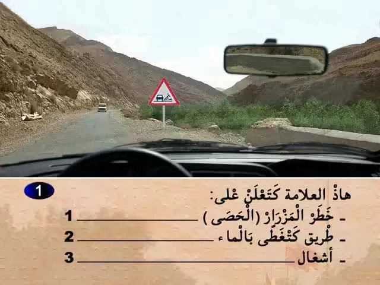
الكلافيي: 1–4 للجواب، Enter للتأكيد وللسؤال الجاي.
السلسلة 60 · النتيجة ديالك
0 / 40
السلسلة 60
السيارة (صنف B) · 40 سؤال، بالصوت، مع الجواب الصحيح والشرح.
السؤال 1
بيّن الجواب
الجواب الصحيح: 1
العلامة كتعني خطر المزرار أو الحصى، وما كايناش علامة كتدل على الأشغال أو الشتا.
السؤال 2
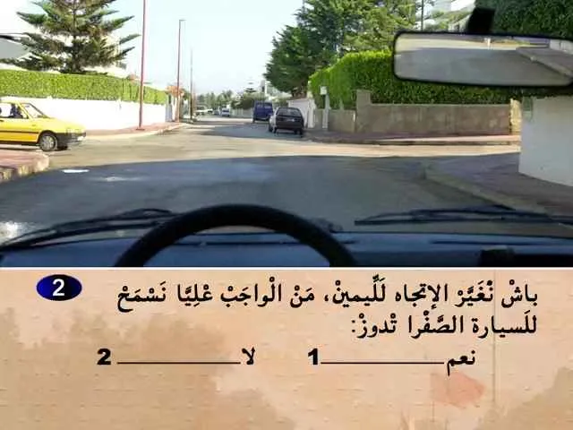
بيّن الجواب
الجواب الصحيح: 2
ديما في ملتقيات الطرق، ملي ما كايناش إشارات مرورية أو علامات طرقية أو شرطي كينظم حركة السير، كنلجأ للقاعدة العامة اللي كتقول أن الأسبقية للعربات الجاية من الجهة اليمنى. فهاد الحالة أنا فاليمن، إذن أنا اللي ندوز الأول.
السؤال 3
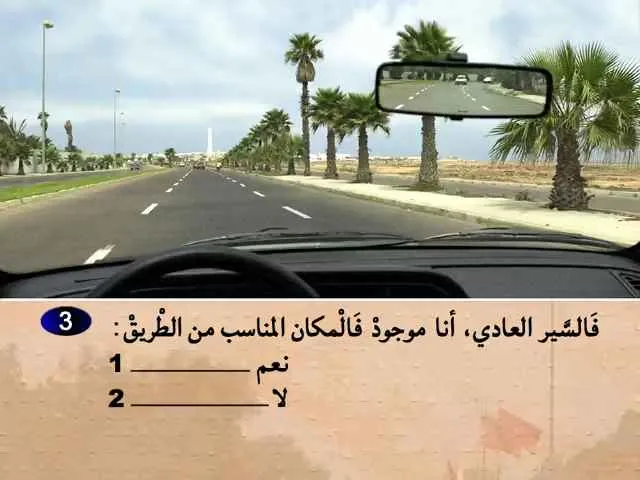
بيّن الجواب
الجواب الصحيح: 2
فالسير العادي، أنا ماشي فالمسلك المناسب للطريق، حيت المسلك الخاص بالسير العادي هو أقصى اليمين، وأنا دابا فمسلك التجاوز.
السؤال 4
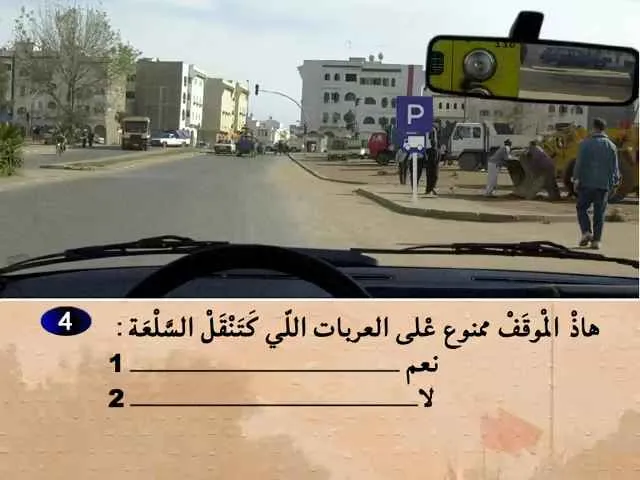
بيّن الجواب
الجواب الصحيح: 2
العلامة كتعني الإرشاد، وكتعني أن الموقف خاص بالشاحنات ماشي موقف ممنوع على الشاحنات أو العربات الثقيلة.
السؤال 5
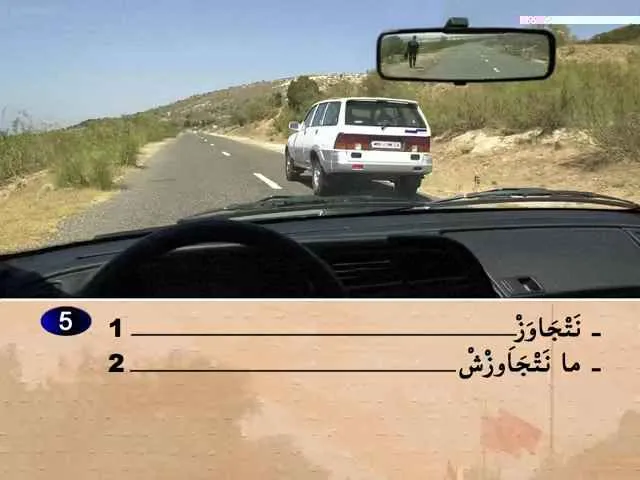
بيّن الجواب
الجواب الصحيح: 1
التشوير الأفقي الخط المتقطع كيسمح لي بالتجاوز، وما كاين حتى شي حاجة كتمنعني، إذن يمكنني التجاوز.
السؤال 6
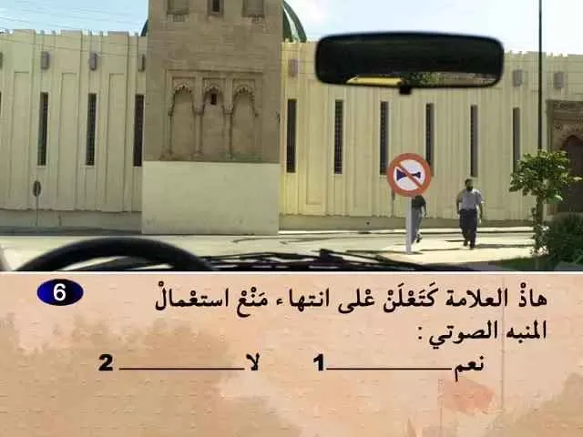
بيّن الجواب
الجواب الصحيح: 2
علامة انتهاء المنع ما كتكونش محاطة باللون الأحمر ولكن بلون رمادي ، هاد العلامة كتعني منع استعمال المنبه الصوتي ماشي انتهاء المنع.
السؤال 7
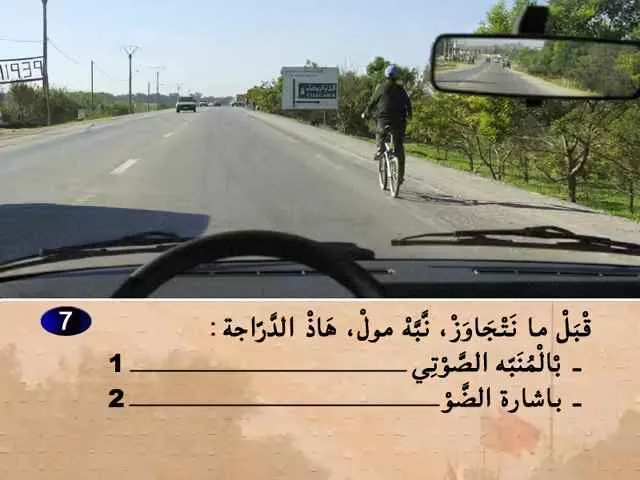
بيّن الجواب
الجواب الصحيح: 1
أنا برا المدينة ونقدر نستعمل المنبه الصوتي، وحيت صاحب الدراجة الهوائية ما يقدرش يشوف الإشارة الضوئية، كننبه بالمنبه الصوتي.
السؤال 8
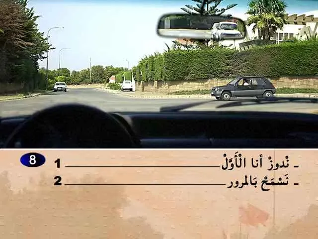
بيّن الجواب
الجواب الصحيح: 2
في ملتقيات الطرق، السيارات الجاية من الجهة اليمنى عندها حق الأسبقية، فهاد الحالة خاصني نخلي السيارة السوداء دوز.
السؤال 9
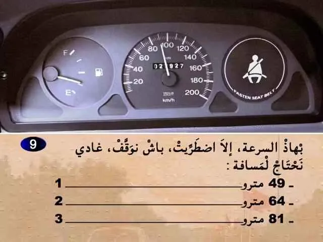
بيّن الجواب
الجواب الصحيح: 3
كنمشي بسرعة 90 كلم فالساعة، ولحساب مسافة الوقوف كنضرب العدد العشري فـ راسو، فهاد الحالة: 9 فـ 9 كتعطي 81، إذن الإجابة الصحيحة هي 81 متر.
السؤال 10
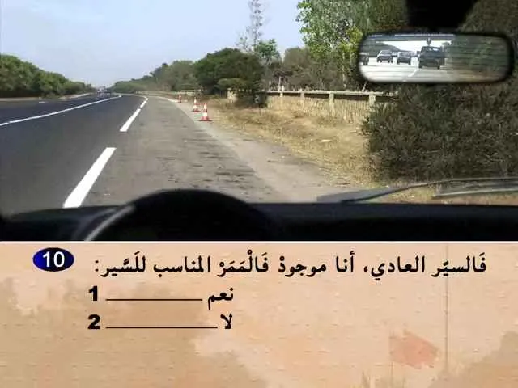
بيّن الجواب
الجواب الصحيح: 2
أنا دابا فمسلك الوقوف الاستعجالي، وهو خاص إلا وقع لي مشكل فالطوموبيل أو توقفت بشكل مفاجئ، أما المسلك الخاص بالسير العادي فهو فالجهة اليسرى.
السؤال 11
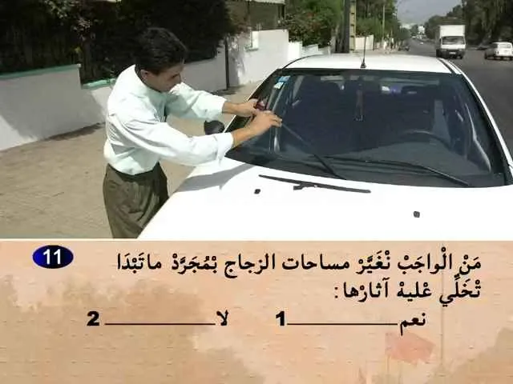
بيّن الجواب
الجواب الصحيح: 1
بالنسبة لمساحات الزجاج، ملي يبداو يتركو آثار على الزجاج، خاصني نبدلهم حيت ما بقاوش خدامين مزيان.
السؤال 12
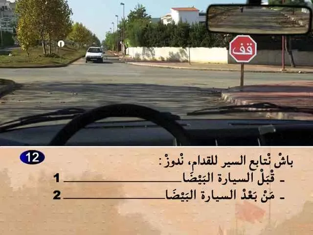
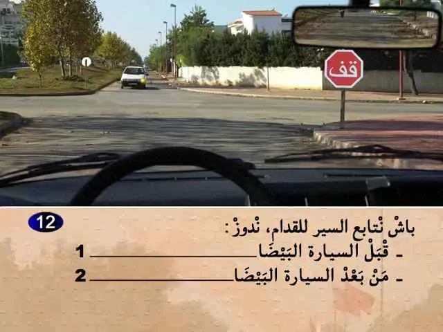
بيّن الجواب
الجواب الصحيح: 1
ملي كاينين نفس العلامات الطرقية لي ولي السيارة المقابلة في ملتقى الطرق، كنطبقو القاعدة العامة اللي كتقول الأسبقية للسيارات الجاية من اليمين. فهاد الحالة بما أنني غادي نكمل والسيارة البيضاء بغات تبدل الاتجاه ليسارها، فأنا اللي ندوز الأول.
السؤال 13
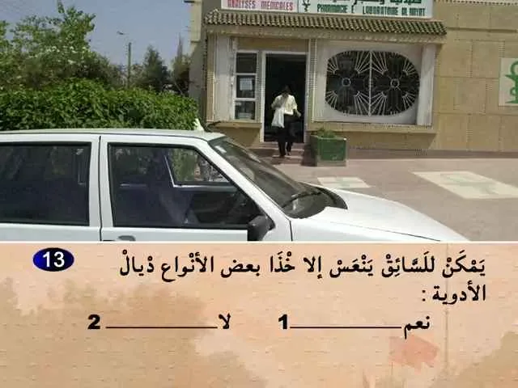
بيّن الجواب
الجواب الصحيح: 1
بعض الأدوية كتسبب النعاس للسائق، بعض الأدوية فيهم علامة وتحذير ما تاخدهاش إلا كنت غادي تسوق، خاصني نرد البال.
السؤال 14
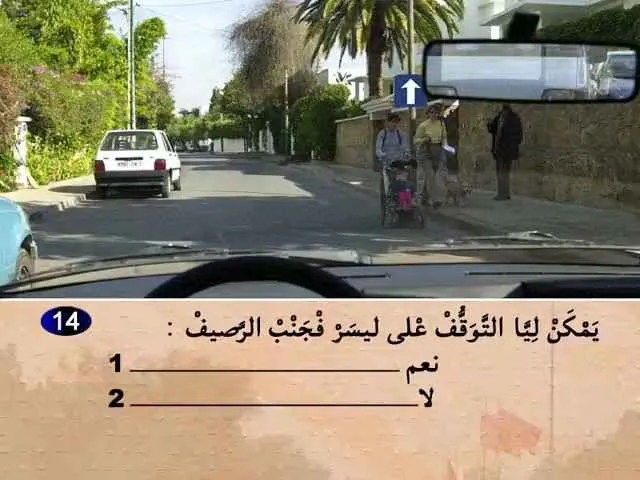
بيّن الجواب
الجواب الصحيح: 1
الطريق ذات اتجاه واحد ماشي ذات اتجاهين، نقدر نوقف فالجهة اليسرى، ما كايناش علامة طرقية كاتمنعني من الوقوف.
السؤال 15
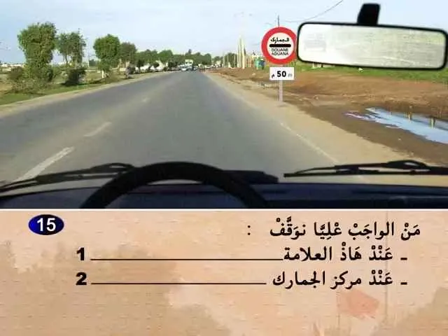
بيّن الجواب
الجواب الصحيح: 2
المنع كيتطبق من عند العلامة ولكن إلا كانت علامة تكميلية مثلا اللي فالصورة 50 متر كتلغي القاعدة العامة، هذا يعني المنع غادي يتطبق بعد 50 متر، إذن نوقف عند الجمارك ماشي عند العلامة.
السؤال 16
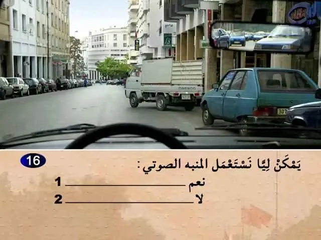
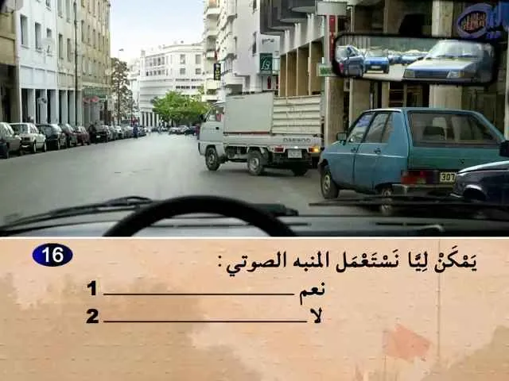
بيّن الجواب
الجواب الصحيح: 2
الشاحنة كتحضر للاندماج فحركة السير، ما كاين حتى خطر يدفعني نستعمل المنبه الصوتي.
السؤال 17
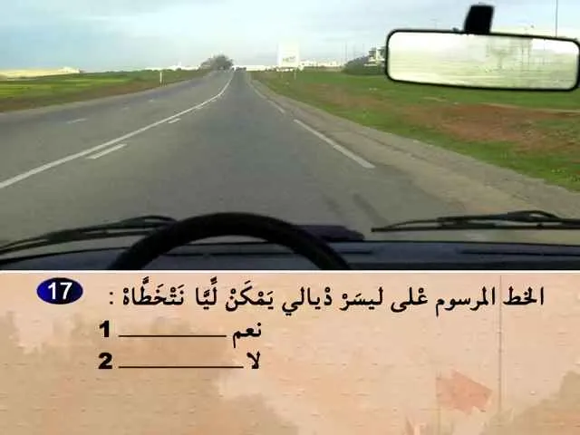
بيّن الجواب
الجواب الصحيح: 1
كاينين جوج خطوط على اليسار، ديما الخط اللي كيهمنا فهاد الحالة هو أول خط، الخط الأول بالنسبة لينا هو خط متقطع ومن بعدو خط متصل، الخط المتقطع هو الأول يعني نقدر نتخطاه بلا مشكلة. فبعض الحالات كيكون الخط المتصل هو الأول ومن بعدو الخط المتقطع، فهاد الحالة ما نقدرش نتخطاه. ديما نشوف أول خط بالنسبة ليا واش متقطع ولا متصل.
السؤال 18
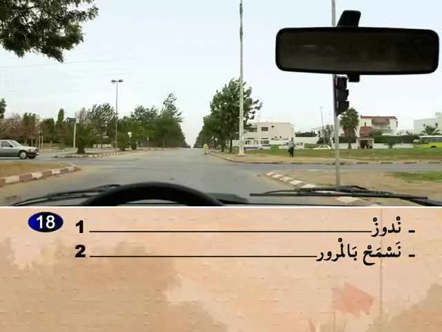
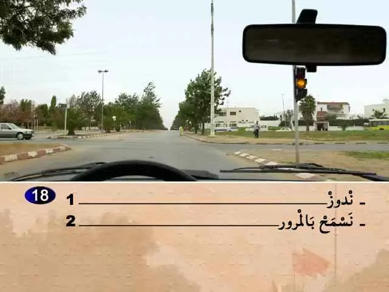
بيّن الجواب
الجواب الصحيح: 1
الإشارة الضوئية باللون البرتقالي الدائم، كتعني السماح بالمرور، وبما أنني في ملتقى الطرق وعلى يمين السيارة، خاصو يسمح لي ندوز وما كايناش سيارة جاية من يميني، إذن خاصني ننقص السرعة ونرد البال وندوز الأول.
السؤال 19
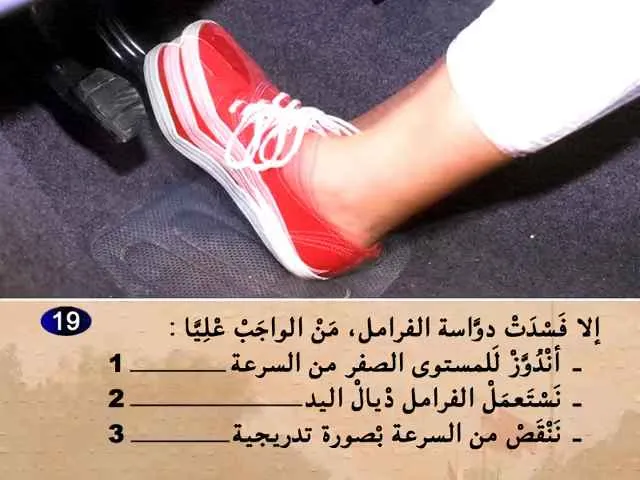
بيّن الجواب
الجواب الصحيح: 2 و 3
إلا ما بقاتش دواسة الفرامل خدامة، خاصني نستعمل فرامل اليد ومحول السرعة. إلا بدلت السرعة للصفر، غادي نفقد السيطرة على السيارة، إذن خاصني نستعمل فرامل اليد وننقص السرعة بشكل تدريجي.
السؤال 20
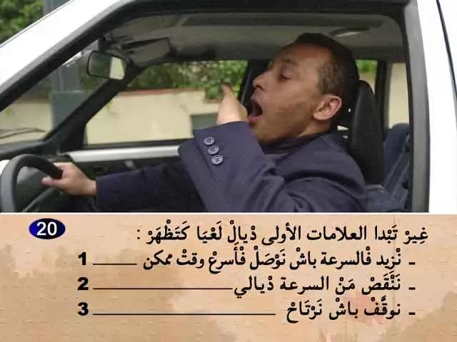
بيّن الجواب
الجواب الصحيح: 3
من الواجب نوقف نرتاح شوية ومن بعد نكمل الطريق. (القانون كيقول بعد كل ساعتين من السياقة خاص ناخد 15 دقيقة راحة).
السؤال 21
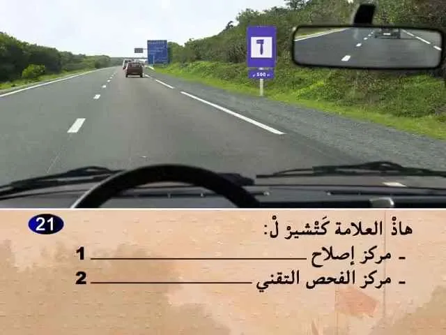
بيّن الجواب
الجواب الصحيح: 1
العلامة الطرقية كتقول بعد 500 متر غادي نلقى مركز إصلاح.
السؤال 22
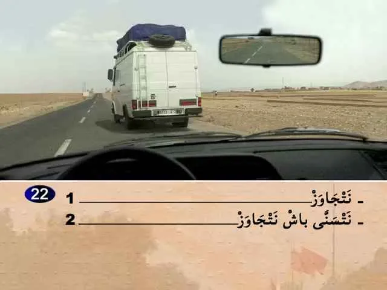
بيّن الجواب
الجواب الصحيح: 1
ما كايناش علامة طرقية كاتمنعني من التجاوز، ما كايناش طوموبيلات جايين من اللور والخط المتقطع كيسمح لي بالتجاوز وما كايناش سيارة جاية من الاتجاه المعاكس، إذن نقدر نتجاوز.
السؤال 23
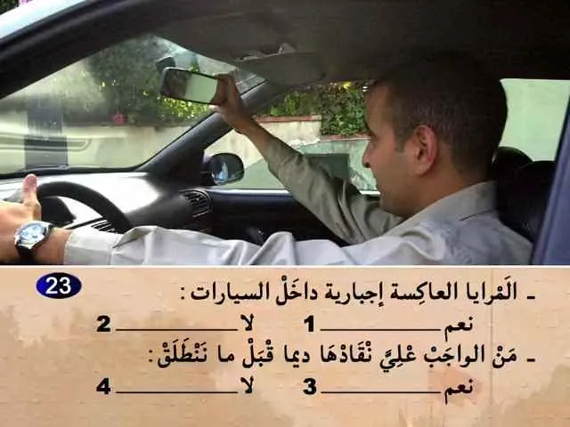
بيّن الجواب
الجواب الصحيح: 1 و 3
بالنسبة للطوموبيلات العادية، المراية العاكسة ضرورية باش نشوف الطوموبيلات الجاية من اللور، وخاصني قبل ما ننطلق نتأكد منها.
السؤال 24
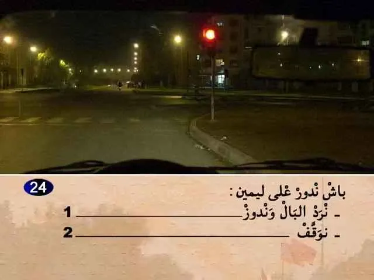
بيّن الجواب
الجواب الصحيح: 2
الإشارة الضوئية باللون الأحمر كتجبرني نوقف، ومن بعد ملي يشتغل الضوء الأخضر، نرد البال وندوز.
السؤال 25
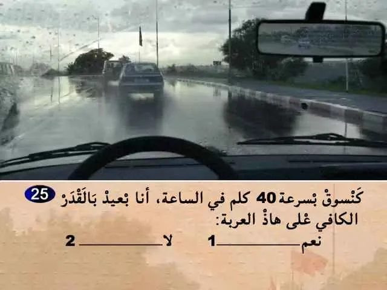
بيّن الجواب
الجواب الصحيح: 2
فالشتا أو التلج أو الضباب خاصني نزيد فمسافة الأمان ماشي ننقصها، فهاد الحالة ماشي بعيد كفاية على هاد الطوموبيل.
السؤال 26
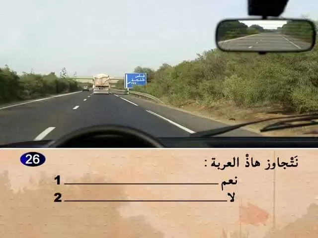
بيّن الجواب
الجواب الصحيح: 1
الخط المتصل فالجانب الأقصى يعني الطريق ذات اتجاه واحد، ما كايناش طوموبيل كتوجد لتجاوزي من اللور، والتشوير الأفقي الخط المتقطع كيسمح لي بالتجاوز. إذن نقدر نتجاوز بلا مشكلة.
السؤال 27
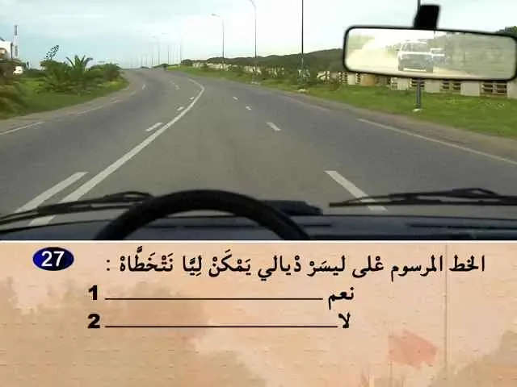
بيّن الجواب
الجواب الصحيح: 2
أول خط على يساري هو خط متصل وما نقدرش نتخطاه.
السؤال 28
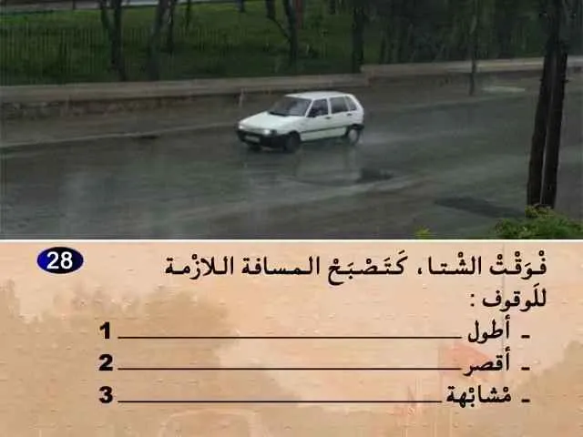
بيّن الجواب
الجواب الصحيح: 1
فالشتا مسافة الأمان أو الوقوف كتصبح أطول.
السؤال 29
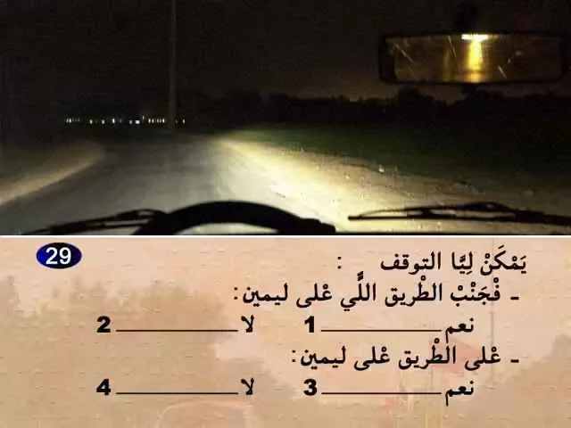
بيّن الجواب
الجواب الصحيح: 1 و 4
فهاد السؤال مصطلح على الطريق كيقصد وسط الطريق، وجنب الطريق هو الجانب ديال الطريق. إذن نقدر نوقف فجانب الطريق بلا مشكلة حيت ما كايناش علامة طرقية كاتمنعني ولكن ما نقدرش نوقف وسط الطريق.
السؤال 30
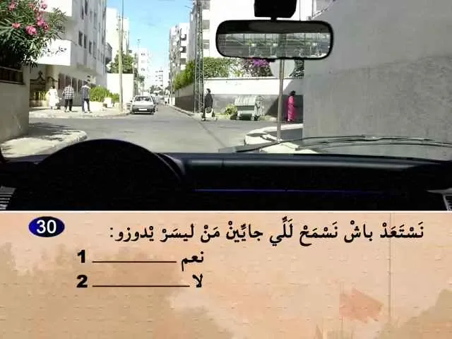
بيّن الجواب
الجواب الصحيح: 2
في ملتقيات الطرق، السيارات الجاية من الجهة اليمنى عندها الأسبقية، ماشي السيارات الجاية من الجهة اليسرى. إذن نسمح للسيارات الجاية من اليمين تدوز، ماشي الجاية من اليسار.
السؤال 31
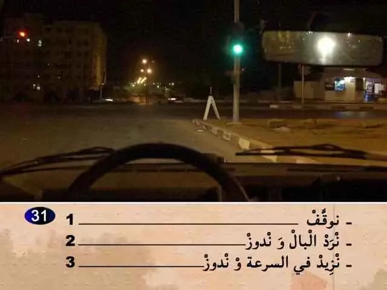
بيّن الجواب
الجواب الصحيح: 2
الإشارة الضوئية باللون الأخضر كتسمح لي بالمرور وبما أننا في ملتقى الطرق وفي الليل خاصنا نرد البال وندوز.
السؤال 32
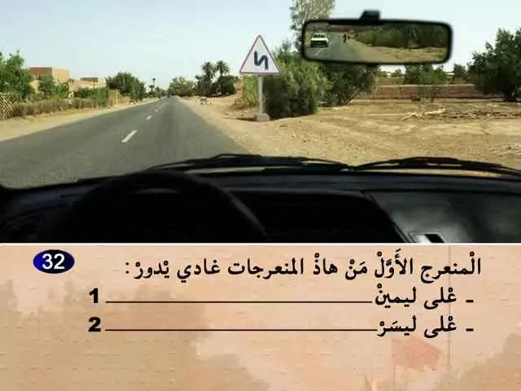
بيّن الجواب
الجواب الصحيح: 2
العلامة الطرقية كتعني أن المنعرج غادي يتجه لليسار.
السؤال 33
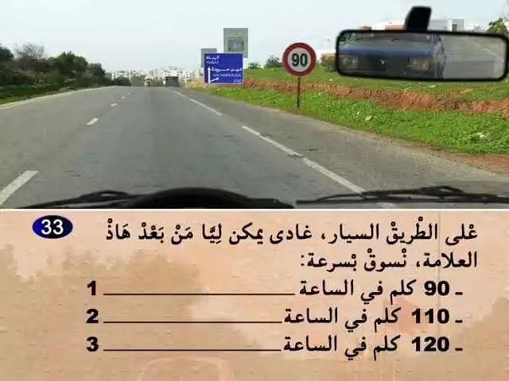
بيّن الجواب
الجواب الصحيح: 1
العلامة الطرقية كتعني المنع، وكتجبرني بالسير بسرعة 90 كلم فالساعة كحد أقصى.
السؤال 34
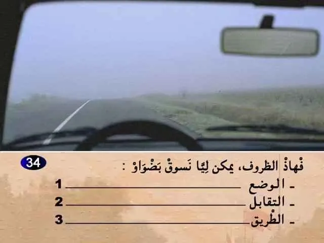
بيّن الجواب
الجواب الصحيح: 2
كاين ضباب، فهاد الحالة كنستعملو أضواء التقابل وأضواء الضباب الأمامية والخلفية. وفخيارات السؤال عدنا غير التقابل، إذن نختارو غير التقابل، الإجابة رقم 2.
السؤال 35
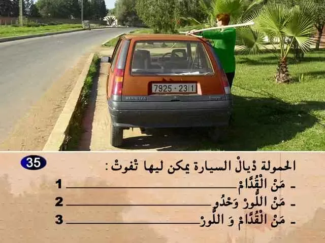
بيّن الجواب
الجواب الصحيح: 2
الحمولة اللي كنحطو فوق الطوموبيل تقدر تخرج غير من اللور، ما تقدرش تخرج من القدام.
السؤال 36
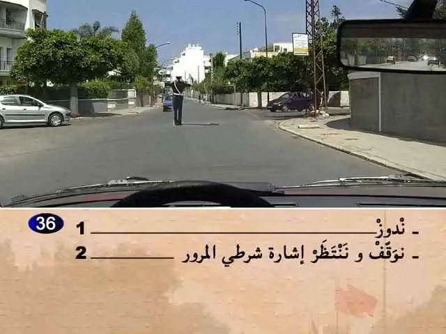
بيّن الجواب
الجواب الصحيح: 2
شرطي المرور ملي يكون مقابل لينا أو من اللور، كيعني الوقوف، إذن نوقف وننتظر إشارة السماح بالمرور من الشرطي.
السؤال 37
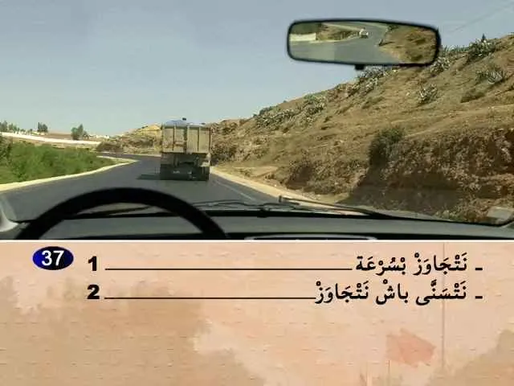
بيّن الجواب
الجواب الصحيح: 2
كاين منعرج وانعدام الرؤية فالمنعرج، خاصني ننتظر وندوز بعد ذلك.
السؤال 38
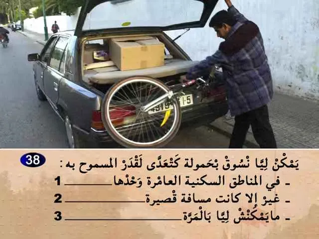
بيّن الجواب
الجواب الصحيح: 3
فهاد الحالة القانون كيقول ما نقدرش نسوق طوموبيل بحمولة تتعدى القدر المسموح به.
السؤال 39
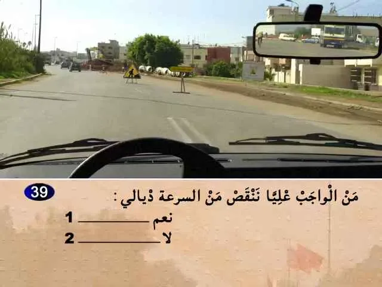
بيّن الجواب
الجواب الصحيح: 1
العلامة الطرقية كتعني أشغال، خاصني نرد البال وننقص السرعة وندوز.
السؤال 40
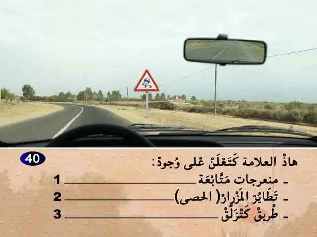
بيّن الجواب
الجواب الصحيح: 3
العلامة الطرقية كتعني الطريق منزلقة.